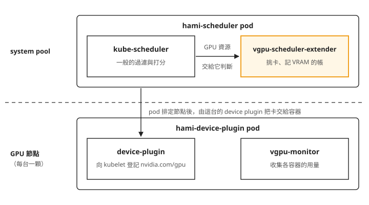
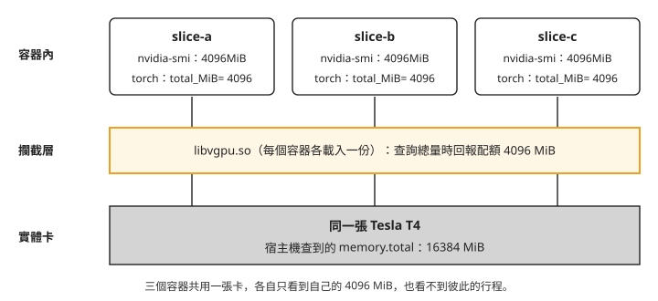
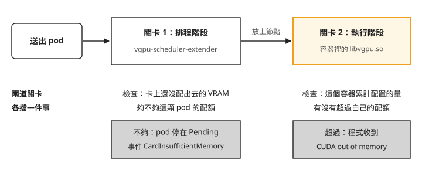
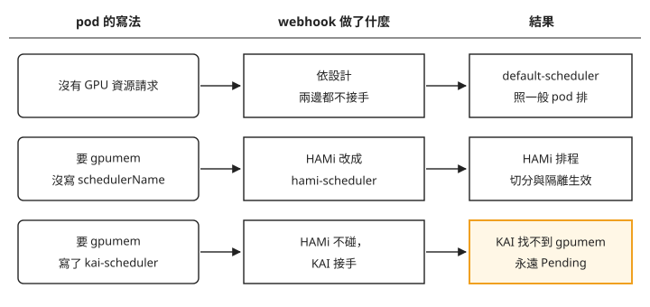

Day 3: 安裝 HAMi——把一張 T4 分給多個容器，並擋住超用¶

想像你在叢集上部署一個推論服務，模型只需要 2 GB 的 VRAM（GPU 上的記憶體），pod 寫的是 nvidia.com/gpu: 1。它一跑起來，就佔走整張 16 GB 的 T4。接著第二個推論服務送進來，同樣只要 2 GB，卻只能 Pending：叢集裡已經沒有空的「一張卡」了，剩下的 14 GB 閒在那裡，誰也用不到。
這一章安裝 HAMi，讓同一張 T4 同時服務多個容器，每個容器各有一份 VRAM 配額。我們會實際回答兩個問題：容器裡的 nvidia-smi 會看到多少 VRAM？宣告了 4 GB 配額的程式硬要配置 8 GB，擋不擋得住，會不會連累同一張卡上的鄰居？
讀完之後，一顆共用 GPU 的 pod 出現 Pending 或 out of memory 時，你能分辨是排程時卡上的 VRAM 不夠、執行時撞到自己的配額，還是這顆 pod 根本沒被 HAMi 接手。
一張卡為什麼只能整張發¶
前兩天的 pod 都用 nvidia.com/gpu: 1 要卡。Kubernetes 本身只認得 CPU、記憶體這類內建資源，GPU 是靠 Day 0 裝的 device plugin 向節點登記的：它告訴 kubelet「這台有一個叫 nvidia.com/gpu 的資源，數量是 1」。這種由外掛登記、名字和數量都由外掛決定的資源，叫 extended resource。它的數量只能是整數，pod 要幾個就整個整個拿，沒有「0.25 張卡」這種寫法。
對一份吃得下整張卡的訓練工作，這樣剛好；對只要 2 GB 的推論服務，就是開場那種浪費。要讓多個容器共用一張卡，下面兩件事必須同時成立：
- 排程時看得懂 VRAM。 排程器得知道「這張卡已經配出去多少 VRAM、還剩多少」，才不會把第五顆各要 4 GB 的 pod 也塞進一張 16 GB 的卡。
- 執行時真的擋得住。 只在排程時記帳沒有用。容器跑起來之後，CUDA 程式（CUDA 是 NVIDIA 的 GPU 程式開發平台，PyTorch 這類框架都透過它使用 GPU）看到的是整張實體卡。有些框架會依卡的總容量決定要佔多少：TensorFlow 是用來訓練與執行機器學習模型的框架，預設一啟動就佔用看得到的幾乎全部 VRAM；vLLM 是提供大型語言模型推論服務的框架，依
gpu_memory_utilization（預設 0.9）佔用總容量的一個比例。看到 16 GB 就照 16 GB 佔，第一個這樣的容器就會讓同一張卡上的鄰居沒有 VRAM 可用。
HAMi（Heterogeneous AI Computing Virtualization Middleware）兩件都做。它帶著自己的 device plugin 和排程元件，在排程時記 VRAM 的帳，在容器裡攔下超過配額的配置。接下來的步驟會一件一件看到它們。
開始之前，準備好 Day 0 建立的 AKS（Kubernetes 1.35.6），並照 Day 1 步驟 1 的方式把 spot GPU pool 啟動至 2 台，每台各有一張 16 GB 的 T4。本章會安裝 HAMi chart／appVersion 2.9.0；保留 Day 1 安裝的 KAI Scheduler v0.16.8，供步驟 6 測試兩套排程器共存時的行為。接著建立 hami-lab namespace，這一章的測試 pod 都放在這裡：
準備：用 prepuller 先把測試映像拉到 GPU 節點上¶
後面的測試 pod 都用 pytorch/pytorch:2.5.1-cuda12.4-cudnn9-runtime。要使用 HAMi 的 VRAM 配額，映像需提供 glibc（C 標準函式庫）及 libvgpu.so 所需的 libdl.so.2；本章指定的 PyTorch 映像符合這個條件。缺少 libdl.so.2 的映像會在容器啟動時失敗，錯誤輸出如下：
sh: error while loading shared libraries: libdl.so.2: cannot open shared object file: No such file or directory
這個 PyTorch 映像有好幾 GB，每台節點第一次拉取都要等好幾分鐘。可以先放一個 DaemonSet，在每台 GPU 節點上各跑一顆只用來拉映像的 pod（這種用途的 DaemonSet 常叫 prepuller）。它不要任何 GPU 資源，所以不受接下來拆裝 device plugin 的影響：
cat > 00-image-prepuller.yaml <<'EOF'
apiVersion: apps/v1
kind: DaemonSet
metadata:
name: image-prepuller
namespace: hami-lab
spec:
selector:
matchLabels:
app: image-prepuller
template:
metadata:
labels:
app: image-prepuller
spec:
nodeSelector:
pool: gpu
tolerations:
- key: kubernetes.azure.com/scalesetpriority
operator: Equal
value: spot
effect: NoSchedule
containers:
- name: prepull
image: pytorch/pytorch:2.5.1-cuda12.4-cudnn9-runtime
command: ["sh", "-c", "sleep infinity"]
resources:
requests:
cpu: 10m
memory: 32Mi
EOF
$ kubectl apply -f 00-image-prepuller.yaml
$ kubectl -n hami-lab get pods -l app=image-prepuller -o wide
兩台 GPU 節點上各有一顆 image-prepuller-*，而且都是 1/1 Running，就表示映像已經拉完：容器要先有映像才能啟動。這一步不做也能完成整章，只是步驟 4 的第一顆 pod 要多等映像下載。
步驟 1:把舊的 device plugin 拆掉¶
Day 0 到 Day 2 的 nvidia.com/gpu 都由 helm release nvdp（NVIDIA 官方的 device plugin）提供。HAMi 要用同一個資源名稱登記自己的切分結果，兩套 device plugin 不能同時管同一張卡，所以先卸載舊的：
卸載之後，每 10 秒查一次兩台 GPU 節點的 allocatable（節點上還能分給 pod 的資源量）：
[11:08:31] uninstall 指令返回
[11:08:37] [{"n":"vmss000009","gpu":"0"},{"n":"vmss00000a","gpu":"1"}]
[11:08:47] [{"n":"vmss000009","gpu":"0"},{"n":"vmss00000a","gpu":"0"}]
十幾秒內兩台都歸零了。kubelet 一發現 device plugin 斷線，就不再把卡分出去，不必重啟節點。namespace 裡的物件也被 helm 清乾淨了：
節點物件上其實有兩個欄位在記 GPU：capacity（這台總共有多少）和 allocatable。把兩個並排印出來：
$ kubectl get nodes -o json | jq '.items[]|select(.metadata.name|test("gpuspot"))
|{name:.metadata.name, capacity:(.status.capacity|with_entries(select(.key|test("nvidia")))),
allocatable:(.status.allocatable|with_entries(select(.key|test("nvidia"))))}'
{
"name": "aks-gpuspot-21249019-vmss000009",
"capacity": { "nvidia.com/gpu": "1" },
"allocatable": { "nvidia.com/gpu": "0" }
}
（另一台的輸出相同。）allocatable 是 0，capacity 卻還寫著 1。kubelet 在 device plugin 斷線時只把 allocatable 歸零，capacity 要等 kubelet 重啟或節點重建才會消失。所以只看 kubectl describe node 的 Capacity 區塊，會誤以為 device plugin 還在。
排程器看的是哪一個？送一顆要 nvidia.com/gpu: 1 的 busybox pod 進去就知道：
NAME READY STATUS RESTARTS AGE
nogpu-probe 0/1 Pending 0 13s
Events:
Warning FailedScheduling 13s default-scheduler
0/3 nodes are available: 1 node(s) didn't match Pod's node affinity/selector,
2 Insufficient nvidia.com/gpu. no new claims to deallocate,
preemption: 0/3 nodes are available: 3 Preemption is not helpful for scheduling.
訊息是 Insufficient nvidia.com/gpu（不夠），而不是「沒有這種資源」：資源名稱還在，值是 0，排程器只認 allocatable。判斷 device plugin 還在不在的方法，整理在疑難排解：capacity 還寫著有卡。
現在叢集有 GPU 硬體、有 AKS 管理的驅動，但沒有任何 device plugin，可以把 HAMi 接上去了。
步驟 2:把 HAMi 要的節點標籤補在 pool 層級¶
HAMi 的 device plugin 只會跑在帶 gpu=on 標籤的節點上（chart 的 nvidiaNodeSelector 預設值），官方文件教的是 kubectl label nodes <node> gpu=on。在 AKS 上不要這樣做：spot 節點被回收重建、pool 縮到 0 再拉回來，都會換成新的 VM，直接貼在節點上的標籤會跟著消失。Day 0 的「device plugin 的 desired 是 0,節點沒有 nvidia.com/gpu」遇過同樣的事。
所以標籤要下在 node pool 層級，新節點一建立就會帶著。注意 --labels 是整組取代，pool 上原有的兩個標籤要一起寫上：
$ az aks nodepool update -g <resource-group> --cluster-name <cluster> -n gpuspot \
--subscription <subscription-id> \
--labels pool=gpu "nvidia.com/gpu.present=true" gpu=on
{ "count": 2, "state": "Succeeded",
"labels": { "gpu": "on", "kubernetes.azure.com/scalesetpriority": "spot",
"nvidia.com/gpu.present": "true", "pool": "gpu" } }
回傳的標籤裡有三個是我們寫的，另外一個 kubernetes.azure.com/scalesetpriority=spot 是 AKS 自己掛的系統標籤，不用也不能寫進 --labels，整組取代也不會把它洗掉。改 pool 標籤只更新節點的標籤，不會換新節點，可以用 kubectl get nodes 的 AGE 欄確認節點還是原來那兩台。
再確認標籤真的到了節點上：
兩台 GPU 節點的 GPU 欄都要是 on，HAMi 的 device plugin 才會跑上去。
步驟 3:安裝 HAMi v2.9.0¶
安裝值只改三件事，其餘沿用 chart 預設：
cat > 01-hami-values.yaml <<'EOF'
devicePlugin:
# without this the DaemonSet never lands on the spot-tainted GPU nodes
tolerations:
- key: kubernetes.azure.com/scalesetpriority
operator: Equal
value: spot
effect: NoSchedule
scheduler:
# pin the control plane to the system pool
nodeSelector:
agentpool: system
patch:
nodeSelector:
agentpool: system
EOF
第一段讓 device plugin 能跑上帶 spot taint 的 GPU 節點；scheduler.nodeSelector 把排程元件固定在 system pool，scheduler.patch.nodeSelector 則是固定安裝時替 webhook 產生憑證的 patch job，讓它也跑在 system pool。保留預設的兩個值等一下會直接看到效果：deviceSplitCount: 10（每張實體卡最多分給 10 個容器）與 deviceMemoryScaling: 1（配出去的 VRAM 總量不超過實體容量）。
chart 裡的 kube-scheduler 映像預設從阿里雲的 registry（registry.cn-hangzhou.aliyuncs.com）拉，tag 跟著叢集版本走，1.35.6 的叢集會拉 kube-scheduler:v1.35.6。這個 registry 不保證跟得上最新的 Kubernetes 版本。helm template ... --kube-version 1.35.6 | grep image: 可以先印出最終的映像字串，但它只看得到名字，不能證明映像存在。裝完之後如果 hami-scheduler 出現 ImagePullBackOff，就用 helm upgrade 加上 --set scheduler.kubeScheduler.image.registry=registry.k8s.io --set scheduler.kubeScheduler.image.repository=kube-scheduler，改從官方 registry 拉。
$ helm repo add hami-charts https://project-hami.github.io/HAMi/ && helm repo update
$ helm install hami hami-charts/hami --version 2.9.0 \
-n kube-system -f 01-hami-values.yaml
NAME: hami
NAMESPACE: kube-system
STATUS: deployed
REVISION: 1
NOTES:
Resource name: nvidia.com/gpu
沿用剛加入的 Helm repository 與 01-hami-values.yaml，用 Helm 3 的 template 預覽 HAMi 2.9.0 在 Kubernetes 1.35.6 下的完整映像名稱（依官方文件補上，本課沒有實跑）：
helm template hami hami-charts/hami \
--version 2.9.0 \
--namespace kube-system \
--kube-version 1.35.6 \
-f 01-hami-values.yaml |
grep 'image:'
若確認拉取失敗的是預設 registry 的 kube-scheduler 映像，依 HAMi v2.9.0 的映像參數與 Helm 3 的 upgrade 保留既有設定，改用 Kubernetes v1.35.6 官方映像清單列出的映像（依官方文件補上，本課沒有實跑）：
helm upgrade hami hami-charts/hami \
--version 2.9.0 \
--namespace kube-system \
--reuse-values \
--set-string scheduler.kubeScheduler.image.registry=registry.k8s.io \
--set-string scheduler.kubeScheduler.image.repository=kube-scheduler \
--set-string scheduler.kubeScheduler.image.tag=v1.35.6 \
--wait --timeout 5m
安裝或更新後，用 Kubernetes 1.35 的 rollout status 等待 Deployment 就緒，再用 get 查看各容器的映像、ready 與 imageID（依官方文件補上，本課沒有實跑）：
kubectl -n kube-system rollout status deployment/hami-scheduler --timeout=300s
kubectl -n kube-system get pods \
-l app.kubernetes.io/instance=hami,app.kubernetes.io/component=hami-scheduler \
-o json |
jq '.items[] | {
pod: .metadata.name,
images: [.spec.containers[] | {name, image}],
status: [.status.containerStatuses[]? | {name, ready, imageID}]
}'
一兩分鐘後，三顆 pod 全部 Running：
hami-device-plugin-k884s 2/2 Running 0 73s aks-gpuspot-21249019-vmss00000a
hami-device-plugin-z46mx 2/2 Running 0 73s aks-gpuspot-21249019-vmss000009
hami-scheduler-6cb48464bb-g8swb 2/2 Running 0 73s aks-system-35459509-vmss000000
READY 欄都是 2/2，每顆 pod 裡有兩個容器。把三顆 pod 和它們的容器畫出來，上半部在 system pool，下半部在 GPU 節點：

我們可以從圖上看到兩件事：
- HAMi 的排程元件不是自己從頭寫的排程器，而是一個標準的
kube-scheduler加上一個 scheduler extender。extender 是 kube-scheduler 支援的擴充方式：一般的過濾與打分照內建邏輯走，遇到它負責的資源，就呼叫外部的 extender 一起判斷。HAMi 的 extender 負責挑哪一張卡，並記住每張卡的 VRAM 已經配出去多少。Day 1 的 KAI 則是自己實作整套排程器，元件也多得多（七個 Deployment）。 - device plugin 跑在每一台 GPU 節點上，負責向 kubelet 登記資源，並在 pod 被排到這台時把卡交給容器。
裝好之後，節點對外宣告的 GPU 數量變了：
{ "name": "aks-gpuspot-21249019-vmss000009",
"capacity": { "nvidia.com/gpu": "10" }, "allocatable": { "nvidia.com/gpu": "10" } }
一張實體 T4 變成 10 份 nvidia.com/gpu。這個 10 就是 deviceSplitCount，意思是「這張卡最多分給幾個容器」，跟 VRAM 無關。HAMi 另外定義了兩種資源：nvidia.com/gpumem（VRAM 配額，單位 MiB）和 nvidia.com/gpucores（算力配額，百分比）。這兩個名字都沒有出現在節點的資源裡，而是記在節點的 annotation 上：
先用 kubectl get nodes -l pool=gpu -o jsonpath='{.items[0].metadata.name}' 取得一台 GPU 節點名稱，再填入下方的 <node-name> 查詢 annotation。修正後的寫法本課沒有實跑；下方保留原查詢的輸出。
$ kubectl get node <node-name> -o json \
| jq '.metadata.annotations|with_entries(select(.key|test("hami")))'
{
"hami.io/node-handshake": "Requesting_2026-08-04 03:12:22",
"hami.io/node-nvidia-register": "[{\"id\":\"GPU-76fd10c5-...-0f4a59e7e1cc\",\"count\":10,\"devmem\":16384,\"devcore\":100,\"type\":\"NVIDIA-Tesla T4\",\"mode\":\"hami-core\",\"health\":true,\"devicepairscore\":{}}]"
}
看 hami.io/node-nvidia-register 這一行：卡的 UUID、count: 10、devmem: 16384（VRAM 總量 MiB）、devcore: 100（算力百分比）都在這裡，這是叢集裡唯一看得到實體卡規格的地方。VRAM 的帳不經過 kubelet，所以 kubectl describe node 查不到還剩多少 VRAM，該去哪裡查見疑難排解：查不到 VRAM 餘額。
步驟 4:把一張 T4 分給三個容器¶
送出三顆 pod，各要 1 份 nvidia.com/gpu 加 4096 MiB 的 nvidia.com/gpumem，用 nodeSelector: kubernetes.io/hostname 固定在同一台節點（也就是同一張卡）。容器的資源寫法是：
- name: app
image: pytorch/pytorch:2.5.1-cuda12.4-cudnn9-runtime
resources:
limits: { nvidia.com/gpu: 1, nvidia.com/gpumem: 4096 }
[11:13:17] pod/slice-a created / pod/slice-b created / pod/slice-c created
[11:13:33] slice-a 1/1 Running 0 16s aks-gpuspot-21249019-vmss000009
slice-b 1/1 Running 0 16s aks-gpuspot-21249019-vmss000009
slice-c 1/1 Running 0 15s aks-gpuspot-21249019-vmss000009
16 秒就 Running，是因為準備那一步已經把映像拉到節點上；沒有先拉，第一次要多等好幾分鐘。是不是真的落在同一張實體卡，看 HAMi 寫回 pod 的 annotation：
slice-a hami.io/vgpu-devices-allocated = GPU-76fd10c5-...-0f4a59e7e1cc,NVIDIA,4096,0:;
slice-b hami.io/vgpu-devices-allocated = GPU-76fd10c5-...-0f4a59e7e1cc,NVIDIA,4096,0:;
slice-c hami.io/vgpu-devices-allocated = GPU-76fd10c5-...-0f4a59e7e1cc,NVIDIA,4096,0:;
格式是 <GPU-UUID>,<廠牌>,<VRAM MiB>,<算力 %>。三顆是同一個 GPU UUID、各 4096 MiB，最後的 0 表示沒有限制算力。
還有一處變化：三顆 pod 的 spec.schedulerName 都變成了 hami-scheduler，但 manifest 裡根本沒寫這個欄位。改它的是 HAMi 的 mutating webhook。Kubernetes 在把一個物件寫進叢集之前，可以先把它送給外部服務檢查或修改，負責修改的這種服務就叫 mutating webhook。HAMi 的 webhook 看到 pod 要 GPU 資源，就把它交給 hami-scheduler 排程，所以 pod 不必自己寫 schedulerName。
容器裡看到的是 4 GB，不是 16 GB¶
在 slice-a 容器內執行 nvidia-smi，再用 PyTorch 讀卡的總容量：
+-----------------------------------------+------------------------+----------------------+
| 0 Tesla T4 Off | 00000001:00:00.0 Off | Off |
| N/A 34C P8 13W / 70W | 0MiB / 4096MiB | 0% Default |
+-----------------------------------------+------------------------+----------------------+
===== torch view =====
name= Tesla T4 total_MiB= 4096
同一時刻，借旁邊一顆不要 GPU 的 pod 在宿主機端查同一張卡：
同一張卡，容器裡是 4096，宿主機是 16384。把三個容器和這張卡畫在一起：

圖上的重點是中間那一層：每個容器都只看到自己的 4096 MiB，nvidia-smi 的 Processes 區塊也是空的，看不到鄰居的行程。
PyTorch 那一行 total_MiB= 4096 說明，程式透過 CUDA 查到的卡片總容量也被換成了配額。依總容量決定用量的框架都會受影響：vLLM 的 gpu_memory_utilization 是總容量的比例，容器如果看到 16 GB，照預設的 0.9 就會去要 14.4 GB；看到 4 GB，就只要 3.6 GB 左右，落在配額之內，應用程式不用改。PyTorch 本身則是用到才向 CUDA 要記憶體，步驟 5 會看到它的錯誤訊息也照 4 GB 的卡來報。
限制藏在哪裡¶
先看 pod spec 裡有沒有任何跟配額有關的設定：
$ kubectl -n hami-lab get pod slice-a -o json \
| jq '.spec.containers[0]|{env,volumeMounts,resources}'
{
"env": null,
"volumeMounts": [],
"resources": { "limits": { "nvidia.com/gpu": "1", "nvidia.com/gpumem": "4096" } }
}
env 是 null，也沒有掛載任何 volume。再 exec 進容器看：
$ kubectl -n hami-lab exec slice-a -- env | grep -iE "cuda|nvidia|vgpu"
CUDA_DEVICE_MEMORY_LIMIT_0=4096m
CUDA_DEVICE_MEMORY_SHARED_CACHE=/usr/local/vgpu/b0118c30-....cache
CUDA_DEVICE_SM_LIMIT=0
LIBCUDA_LOG_LEVEL=1
NVIDIA_VISIBLE_DEVICES=GPU-76fd10c5-...-0f4a59e7e1cc
$ kubectl -n hami-lab exec slice-a -- cat /etc/ld.so.preload
/usr/local/vgpu/libvgpu.so
容器裡多了 CUDA_DEVICE_MEMORY_LIMIT_0=4096m 這類環境變數，還有一個 /etc/ld.so.preload。Linux 的動態載入器在啟動任何程式時，會先載入這個檔案列出的函式庫，再載入程式自己需要的。HAMi 放進去的是 libvgpu.so，所以容器裡每個程式呼叫 CUDA，或呼叫 NVML（NVIDIA 用來查詢 GPU 狀態的函式庫，nvidia-smi 就靠它），都會先經過 libvgpu.so。nvidia-smi 回報 4096，就是因為它查詢記憶體的那個 NVML 呼叫被改寫了。
這些設定是 device plugin 在把卡交給容器時，透過 kubelet 直接注入容器的，不會寫回 pod spec。所以要確認一顆 pod 有沒有真的被 HAMi 接管，kubectl get pod -o yaml 幫不上忙，要 exec 進去看這兩樣。
VRAM 不夠時，排程階段就擋下來¶
這張卡已經配出 3 × 4096 = 12288 MiB（實體 16384），再送一顆要 8192 MiB 的 pod：
NAME READY STATUS RESTARTS AGE
mem-overcommit-probe 0/1 Pending 0 16s
Events:
Warning FilteringFailed hami-scheduler 1 nodes CardInsufficientMemory(aks-gpuspot-21249019-vmss000009)
Warning FilteringFailed hami-scheduler no available node, 1 nodes do not meet
Warning FailedScheduling hami-scheduler 0/3 nodes are available: 1 NodeUnfitPod, ...
# 同一時刻節點的帳本:
Allocated resources:
Resource Requests Limits
nvidia.com/gpu 3 3
CardInsufficientMemory 是 extender 發出的事件，直接點名哪一張卡的 VRAM 不夠。再看下面節點的帳本：只寫著 nvidia.com/gpu 用掉 3 份，「VRAM 只剩 4096」這件事在上面完全看不到。看到這種 Pending，要讀 pod 的事件，不要讀節點帳本。
不指定節點時，HAMi 會先把一張卡疊滿¶
前面是我們把 pod 固定在同一台。如果不指定節點，HAMi 會怎麼擺？先刪掉前面的 pod，讓兩張卡都是空的：
再送四顆各要 3000 MiB 的 pod，不寫任何 nodeSelector：
NAME STATUS NODE
g-place-1 Running aks-gpuspot-21249019-vmss000009
g-place-2 Running aks-gpuspot-21249019-vmss000009
g-place-3 Running aks-gpuspot-21249019-vmss000009
g-place-4 Running aks-gpuspot-21249019-vmss000009
g-place-1 dev=GPU-76fd10c5-...-0f4a59e7e1cc,NVIDIA,3000,0:; ← 四顆的 UUID 完全相同
node 000009: nvidia.com/gpu 4 (4 顆 pod,共 12000 MiB)
node 00000a: nvidia.com/gpu 0 (完全沒用到)
四顆全部疊在同一張 T4 上，另一台節點完全沒用到。這是 chart 的預設策略：節點層級是 binpack（先把一台塞滿，再換下一台），同一台有多張卡時，卡的層級是 spread（把 pod 分散到不同卡上）。集中的好處是空出來的節點可以縮掉；代價是風險也集中，那台 spot 節點被回收，四個服務一起停。想要分散，就把 scheduler.defaultSchedulerPolicy.nodeSchedulerPolicy 改成 spread。
兩道關卡¶
到這裡，HAMi 在兩個時間點各擋了一件事。把一顆 pod 從送出到程式配置 VRAM 的過程畫成一條線：

我們可以從圖上看到，兩道關卡檢查的是不同的數字：
- 排程階段比的是「這張卡還沒配出去的 VRAM」和「這顆 pod 的配額」，擋下的 pod 會停在 Pending。步驟 4 的
mem-overcommit-probe就是這種。 - 執行階段比的是「這個容器已經配置的量」和「它自己的配額」，跟卡上還剩多少無關。擋下的是程式裡的某一次配置，pod 本身已經在跑。
第一道關卡步驟 4 已經看過了。下一步驗證第二道。
步驟 5:超額配置只影響自己¶
兩顆 pod 固定在同一台（同一張卡），配額都是 4096 MiB：iso-holder 配置 3.00 GiB 並一直持有，每 15 秒回報一次還活著，並印出資料校驗值；iso-hog 以 512 MiB 為單位一路加碼，目標 8192 MiB，是配額的兩倍。兩顆都是用 PyTorch 在 GPU 上建立張量，完整內容如下：
03-isolation-pods.yaml
cat > 03-isolation-pods.yaml <<'EOF'
apiVersion: v1
kind: Pod
metadata:
name: iso-holder
namespace: hami-lab
spec:
restartPolicy: Never
nodeSelector:
kubernetes.io/hostname: NODE_PLACEHOLDER
tolerations:
- key: kubernetes.azure.com/scalesetpriority
operator: Equal
value: spot
effect: NoSchedule
containers:
- name: app
image: pytorch/pytorch:2.5.1-cuda12.4-cudnn9-runtime
command:
- python
- -u
- -c
- |
import torch, time
print("budget check: total_MiB =", torch.cuda.get_device_properties(0).total_memory // 1024 // 1024, flush=True)
buf = torch.empty(3 * 1024 * 1024 * 1024 // 4, dtype=torch.float32, device="cuda")
buf.fill_(1.0)
torch.cuda.synchronize()
print("HOLDER: allocated 3.00 GiB, checksum=", float(buf[0]), flush=True)
i = 0
while True:
torch.cuda.synchronize()
print("HOLDER alive t=%ds reserved_MiB=%d first_elem=%s"
% (i, torch.cuda.memory_reserved() // 1024 // 1024, float(buf[0])), flush=True)
i += 15
time.sleep(15)
resources:
limits:
nvidia.com/gpu: 1
nvidia.com/gpumem: 4096
---
apiVersion: v1
kind: Pod
metadata:
name: iso-hog
namespace: hami-lab
spec:
restartPolicy: Never
nodeSelector:
kubernetes.io/hostname: NODE_PLACEHOLDER
tolerations:
- key: kubernetes.azure.com/scalesetpriority
operator: Equal
value: spot
effect: NoSchedule
containers:
- name: app
image: pytorch/pytorch:2.5.1-cuda12.4-cudnn9-runtime
command:
- python
- -u
- -c
- |
import torch
print("budget check: total_MiB =", torch.cuda.get_device_properties(0).total_memory // 1024 // 1024, flush=True)
chunks = []
CHUNK = 512 * 1024 * 1024
for n in range(1, 17):
try:
chunks.append(torch.empty(CHUNK // 4, dtype=torch.float32, device="cuda"))
torch.cuda.synchronize()
print("HOG: allocated %d MiB total" % (n * 512), flush=True)
except Exception as e:
print("HOG: FAILED at %d MiB" % (n * 512), flush=True)
print("HOG: exception type =", type(e).__name__, flush=True)
print("HOG: exception text =", str(e), flush=True)
raise SystemExit(0)
print("HOG: reached 8192 MiB with NO error -- isolation did NOT hold", flush=True)
resources:
limits:
nvidia.com/gpu: 1
nvidia.com/gpumem: 4096
EOF
先刪掉上一節的四顆放置測試 pod，讓卡上有空間。manifest 裡的 NODE_PLACEHOLDER 換成一台 GPU 節點的名稱，兩顆就會落在同一張卡上：
$ kubectl -n hami-lab delete pod g-place-1 g-place-2 g-place-3 g-place-4
$ NODE=$(kubectl get nodes -l gpu=on -o jsonpath='{.items[0].metadata.name}')
$ sed "s/NODE_PLACEHOLDER/$NODE/" 03-isolation-pods.yaml | kubectl apply -f -
$ kubectl -n hami-lab logs -f iso-hog
hog 的錯誤訊息有兩層¶
budget check: total_MiB = 4096
HOG: allocated 512 MiB total
...
HOG: allocated 3584 MiB total
[HAMI-core ERROR (pid:1 thread=125213539699584 allocator.c:52)]: Device 0 OOM 4401922048 / 4294967296
HOG: FAILED at 4096 MiB
HOG: exception type = OutOfMemoryError
HOG: exception text = CUDA out of memory. Tried to allocate 512.00 MiB. GPU 0 has a total
capacity of 4.00 GiB of which 410.00 MiB is free. Including non-PyTorch memory, this process
has 3.60 GiB memory in use. ... If reserved but unallocated memory is large try
setting PYTORCH_CUDA_ALLOC_CONF=expandable_segments:True to avoid fragmentation.
先看 [HAMI-core ERROR ...] 那一行，這是 libvgpu.so 印的（HAMi-core 是它的專案名稱）。分母 4294967296 正好是 4 GiB，也就是配額；分子 4401922048 約 4.10 GiB，是這次請求之後的累計量。拒絕這次配置的是攔截層，不是 GPU 驅動。
再看下面 PyTorch 的訊息：GPU 0 has a total capacity of 4.00 GiB。PyTorch 依回報容量產生訊息，顯示的總容量是 4.00 GiB，並附上調整 expandable_segments 的建議。程式不需要另外判斷這個容量是否來自 HAMi 配額。
還有一個數字要注意：實際拿到的是 3584 MiB（7 塊 512 MiB），第 8 塊就被擋了。HAMi 算的用量除了程式配置的資料，還包含 CUDA context：程式第一次使用 GPU 時，CUDA 會替這個 process 在卡上建立一份執行環境，這份環境本身就要佔 VRAM。從上面的數字推算，被拒絕時累計是 4401922048 bytes，約 4198 MiB，扣掉已配置的 3584 MiB 和這次要的 512 MiB，context 大約 100 MiB。3584 + 約 100 + 512 超過 4096，所以第 8 塊放不進去；主要原因是每次要 512 MiB 這個單位太大，context 本身不大。規劃配額時，在模型需要的量之外多留約 100–200 MiB 給 context。
擋住它的是配額，不是卡的容量¶
把 hog 放慢：iso-hog-slow 和 iso-hog 只差在每配置一塊就停 2 秒，方便同時在宿主機端記錄實體卡的用量。等 iso-hog 變成 Completed（它撞到配額後就結束，用掉的 VRAM 也還回去），再送出放慢版：
04-hog-slow.yaml
cat > 04-hog-slow.yaml <<'EOF'
apiVersion: v1
kind: Pod
metadata:
name: iso-hog-slow
namespace: hami-lab
spec:
restartPolicy: Never
nodeSelector:
kubernetes.io/hostname: NODE_PLACEHOLDER
tolerations:
- key: kubernetes.azure.com/scalesetpriority
operator: Equal
value: spot
effect: NoSchedule
containers:
- name: app
image: pytorch/pytorch:2.5.1-cuda12.4-cudnn9-runtime
command:
- python
- -u
- -c
- |
import torch, time
print("budget check: total_MiB =", torch.cuda.get_device_properties(0).total_memory // 1024 // 1024, flush=True)
chunks = []
CHUNK = 512 * 1024 * 1024
for n in range(1, 17):
try:
chunks.append(torch.empty(CHUNK // 4, dtype=torch.float32, device="cuda"))
torch.cuda.synchronize()
print("HOG: allocated %d MiB total" % (n * 512), flush=True)
except Exception as e:
print("HOG: FAILED at %d MiB" % (n * 512), flush=True)
print("HOG: exception type =", type(e).__name__, flush=True)
print("HOG: exception text =", str(e), flush=True)
raise SystemExit(0)
time.sleep(2)
print("HOG: reached 8192 MiB with NO error -- isolation did NOT hold", flush=True)
resources:
limits:
nvidia.com/gpu: 1
nvidia.com/gpumem: 4096
EOF
實體卡的用量和 hog 的 log 並排如下：
[11:16:54] 實體卡 used=3193 MiB | hog:
[11:16:58] 實體卡 used=3807 MiB | hog: HOG: allocated 1024 MiB total
[11:17:02] 實體卡 used=4831 MiB | hog: HOG: allocated 2048 MiB total
[11:17:06] 實體卡 used=5855 MiB | hog: HOG: allocated 3072 MiB total
[11:17:10] 實體卡 used=6879 MiB | hog: HOG: allocated 3584 MiB total
[11:17:14] 實體卡 used=3193 MiB | hog: HOG: exception text = CUDA out of memory ...
看倒數第二行：hog 被拒絕時，實體卡用了 6879 / 16384 MiB，還空著約 9.5 GB，它還是拿不到下一塊 512 MiB。上限來自容器自己的配額，卡上還剩多少跟它無關，這就是上一節圖上的第二道關卡。若沒有配額限制，程式會繼續嘗試配置，目標為 8 GiB。最後一行 hog 退出後，用量掉回 3193 MiB（holder 的 3 GiB 加上它的 CUDA context），hog 用過的 VRAM 都釋放了。
鄰居不受影響¶
HOLDER: allocated 3.00 GiB, checksum= 1.0
HOLDER alive t=0s reserved_MiB=3072 first_elem=1.0
...
HOLDER alive t=165s reserved_MiB=3072 first_elem=1.0
NAME READY STATUS RESTARTS AGE
iso-hog-slow 0/1 Completed 0 71s
iso-holder 1/1 Running 0 3m
快版和慢版的 hog 各撞了一次配額，holder 的 reserved_MiB 一直是 3072、資料校驗值一直是 1.0、RESTARTS 0。驅動也沒有回報 Xid 錯誤（NVIDIA 驅動遇到 GPU 硬體或驅動層級的錯誤時，記在系統 log 裡的錯誤碼），GPU 沒有被重設，節點上其他 pod 都沒受影響。超用的後果只留在 hog 自己的容器裡。
步驟 6:把 pod 指名交給 KAI，卻要 HAMi 的 VRAM¶
現在叢集裡兩套系統都在跑：Day 1 裝的 KAI，和今天裝的 HAMi。一個很自然的想法是「用 KAI 的佇列管配額，用 HAMi 的切分省卡」。送一顆 pod 試試，指名由 KAI 排程，但要的是 HAMi 的 VRAM 配額：
spec:
schedulerName: kai-scheduler # explicitly ask for KAI
containers:
- resources:
limits:
nvidia.com/gpu: 1
nvidia.com/gpumem: 4096 # but ask for HAMi's resource
NAME READY STATUS RESTARTS AGE
collision-probe 0/1 Pending 0 20s
spec.schedulerName(webhook 跑完之後)= kai-scheduler
PodGroup: pg-collision-probe-50b46df6-... ← KAI 接手了
Events:
Warning Unschedulable kai-scheduler Scheduling conditions were not met for pod
hami-lab/collision-probe:
MaxNodePoolResources: The pod hami-lab/collision-probe requires GPU: 1, CPU: 0 (cores),
memory: 0 (GB), pods: 1, nvidia.com/gpumem: 4096000.
No node in the default node-pool has nvidia.com/gpumem resources.
這顆 pod 一直 Pending。webhook 跑完之後，schedulerName 還是 kai-scheduler，KAI 也替它建了 PodGroup，表示 HAMi 的 webhook 沒有改它，是 KAI 接手了。HAMi 的 webhook 設定了 forceOverwriteDefaultScheduler: true，但這只在 schedulerName 是 default-scheduler 時生效，已經指名其他排程器的 pod 它一律不碰。接著 KAI 到節點的資源裡找 nvidia.com/gpumem，但步驟 3 看過，這個名字根本不在節點資源裡，所以找不到。訊息裡的 4096000 是 KAI 把它當成一般資源做了 milli 換算（4096 × 1000），數字看起來奇怪，但不是 bug。
誰來排一顆 pod，取決於它的寫法。把今天看過的三種情況並排：

我們可以從圖上看到，HAMi 的 webhook 只改沒寫 schedulerName、或寫的是 default-scheduler 的 pod。HAMi 不改寫已指定其他排程器（例如 kai-scheduler）的 schedulerName，所以兩套系統裝在一起，並不會自動合作。要用 HAMi 切分的 pod 就不要寫 schedulerName，讓 HAMi 的 webhook 去改；要走 KAI 佇列的 pod 照 KAI 的方式寫，兩邊不交集。
除了這顆刻意送的 pod，今天其他的 pod（3 顆切分、4 顆放置、隔離測試的 pod）KAI 都沒有介入：
hami-lab namespace 的 PodGroup: No resources found
iso-holder 的 labels/annotations: 只有 hami.io/*,沒有 kai/runai 的鍵
KAI admission log 提到 hami-lab 的行數: 0
KAI binder log 提到 hami 的行數: 0
KAI 七元件(跨 Day 1–3): 全部 Running,RESTARTS 0,age 20h
hami-lab 這個 namespace 同時落在兩個 mutating webhook 的範圍內（KAI 的 mutating-kai-admission 只排除 kube-system 與 kai-scheduler，HAMi 的 vgpu.hami.io 只排除帶 hami.io/webhook: ignore 標籤的 namespace 或 pod），實際上卻沒有互相干擾，因為誰接手由 schedulerName 決定。沒有 GPU 資源請求的 pod，依兩邊的設計都不會接手：HAMi 的 webhook 只改寫有請求 HAMi 資源的 pod，KAI 只排 schedulerName 指向它的 pod。準備那一步的 prepuller 就是這種 pod，可以用 kubectl -n hami-lab get pods -l app=image-prepuller -o jsonpath='{.items[*].spec.schedulerName}' 確認，它一直是 default-scheduler。
兩個 webhook 還有一處設計正好相反。webhook 的設定裡有一個 failurePolicy 欄位，決定 webhook 本身掛掉時，Kubernetes 要怎麼處理送進來的 pod。KAI 設成 Fail：webhook 掛掉就拒絕建立 pod。HAMi 設成 Ignore：webhook 掛掉，pod 照樣建立，只是不會被改寫。後者在故障時不容易發現：pod 會在沒有任何 VRAM 限制的狀態下跑起來，kubectl get pods 一片 Running，隔離其實已經失效。所以監控要檢查 pod 有沒有拿到 hami.io/vgpu-devices-allocated annotation，只看 Running 看不出這件事。
步驟 7:需不需要 GPU Operator¶
Day 1 提過，KAI 的 README 把 NVIDIA GPU Operator 列為前置條件。GPU Operator 是 NVIDIA 提供的一個 operator，會在 GPU 節點上自動安裝驅動、container toolkit、device plugin，以及節點標籤、監控等元件。Day 1 已經確認「一顆 pod 用一張完整的卡」不需要它。把一張卡切給多個容器呢？查一下今天的叢集裡有沒有 Operator 的元件：
查詢節點 labels 前，先用 kubectl get nodes -l pool=gpu -o jsonpath='{.items[0].metadata.name}' 取得一台 GPU 節點名稱，填入下方的 <node-name>。修正後的寫法本課沒有實跑；下方保留原查詢的輸出。
$ kubectl get ds,deploy -A | grep -iE "nvidia|dcgm|nfd|node-feature|mig|gpu-feature"
# operator 類工作負載(driver / toolkit / dcgm / NFD / MIG manager):NONE
$ kubectl get node <node-name> -o json \
| jq '[.metadata.labels|keys[]|select(test("feature.node|nvidia"))]'
[ "nvidia.com/gpu.present" ] ← 這一顆是我們自己在 pool 層級掛的,不是 NFD 掛的
grep 的幾個關鍵字都是 Operator 會裝的元件：NFD（Node Feature Discovery，偵測節點硬體並自動貼標籤）、MIG manager（把 A100、H100 這類卡切成多個硬體分割區）、DCGM（NVIDIA 的 GPU 監控工具，DCGM exporter 把溫度、使用率等指標輸出給 Prometheus）。結果一個都沒有。今天所有的結果，包括一張卡分成 10 份、四顆 pod 共用一張 T4、容器內看到 4096 MiB、超額配置在排程和執行兩個階段都被擋下，都是在沒有 GPU Operator 的叢集上跑出來的。所以 HAMi 的 VRAM 切分與隔離，在 AKS 上不需要 GPU Operator。
原因是 HAMi 需要平台提供的只有兩樣：NVIDIA 驅動（AKS 管理，這裡是 580.159.04），以及 nvidia-container-runtime（AKS 的 GPU 節點預先裝好）。device plugin 與 libvgpu.so 都是 HAMi 自己帶的。至於 KAI 自己的 GPU 共用功能需不需要 Operator，那是另一個問題，留到 Day 4。
少了 Operator，代價是沒有每張 GPU 的硬體指標（使用率、溫度、功耗）。HAMi 自己的 metrics 只涵蓋它的配額帳，硬體指標要自己另外裝 DCGM exporter，Day 5 會做這件事。
步驟 8:收尾¶
刪掉測試 pod 與 hami-lab namespace。HAMi 與 KAI 都保留（Day 4 要用），GPU pool 照 Day 0 的做法縮回 0，縮完再查一次 pool 的狀態，確認 count 真的是 0：
$ kubectl -n hami-lab delete pod --all --grace-period=5
$ kubectl delete namespace hami-lab
$ az aks nodepool scale -g <resource-group> --cluster-name <cluster> -n gpuspot \
--subscription <subscription-id> --node-count 0
$ az aks nodepool show -g <resource-group> --cluster-name <cluster> -n gpuspot \
--subscription <subscription-id> --query '{count:count,state:provisioningState}' -o json
{
"count": 0,
"state": "Succeeded"
}
GPU 節點消失後，看一下兩個 HAMi 元件：
hami-scheduler-6cb48464bb-g8swb 2/2 Running 0 12m ← 在 system pool,不受影響
hami-device-plugin (DaemonSet) DESIRED 0 CURRENT 0 ← 沒有 gpu=on 的節點,自然歸零
device plugin 的 DaemonSet DESIRED 歸零，因為已經沒有帶 gpu=on 的節點；scheduler 固定在 system pool，不受影響。這就是步驟 3 把排程元件和 device plugin 分開放的用意。Day 4 把 GPU pool 拉回來時，新節點會從 pool 帶著 gpu=on，DaemonSet 會自動在上面建立 pod，不需要重裝。
疑難排解¶
helm uninstall 之後，capacity 還寫著有卡¶
症狀:卸載 device plugin 之後，kubectl describe node 的 Capacity 區塊依然寫著 nvidia.com/gpu: 1，看起來 device plugin 還活著、GPU 還能用。
原因:device plugin 斷線時，kubelet 只把 allocatable 歸零，capacity 要到 kubelet 重啟或節點重建才消失（步驟 1）。
修法:判斷 device plugin 是否還在，一律看 allocatable。一行版：
$ kubectl get nodes -o json \
| jq -r '.items[]|"\(.metadata.name) \(.status.allocatable["nvidia.com/gpu"] // "<absent>")"'
三種輸出要分清楚：<absent> 是這台節點從來沒有 GPU 資源；0 是曾經有、現在 device plugin 不在；大於 0 表示 device plugin 有登記資源。allocatable 是節點可分配的總量，不會因為 pod 用掉而減少；已經用掉多少，要看 kubectl describe node 的 Allocated resources 裡的 requests。
kubectl describe node 查不到 VRAM 餘額¶
症狀:pod 寫了 nvidia.com/gpumem: 4096 也順利跑起來，但 kubectl describe node 的 Capacity、Allocatable、Allocated resources 三個區塊都找不到 nvidia.com/gpumem。想知道「這張卡還剩多少 VRAM 可以配」，平常用的 kubectl 指令都查不到。
原因:HAMi 的 device plugin 只向 kubelet 登記 nvidia.com/gpu 一種資源（數量等於 deviceSplitCount）。VRAM 與算力的帳不經過 kubelet：實體卡規格寫在節點 annotation hami.io/node-nvidia-register，已配出去的量記在 scheduler extender 的記憶體與各 pod 的 annotation 上。scheduler 的 configmap 寫得很清楚：
managedResources:
- { ignoredByScheduler: true, name: nvidia.com/gpu }
- { ignoredByScheduler: true, name: nvidia.com/gpumem }
- { ignoredByScheduler: true, name: nvidia.com/gpucores }
ignoredByScheduler: true 的意思是「內建的 kube-scheduler 不要拿這幾個資源判斷節點夠不夠」，全部交給 extender。內建排程器不知道 gpumem 是什麼，也就不會把它算進節點的帳。
修法:查 VRAM 餘額要用 HAMi 自己的資訊來源，有三個地方可查：把各 pod 的 hami.io/vgpu-devices-allocated annotation 加總；看 extender 的 log（kubectl -n kube-system logs deploy/hami-scheduler -c vgpu-scheduler-extender）裡的 Usedmem；或讀 HAMi 的 metrics endpoint（chart 預設開在 NodePort 31993）。kubectl describe node 只告訴你 nvidia.com/gpu 用掉幾份，那是分給了幾個容器，不是用掉幾 GB。
指定 schedulerName: kai-scheduler 又要 gpumem，pod 永遠 Pending¶
症狀:pod 寫了 schedulerName: kai-scheduler 又要 nvidia.com/gpumem，一直 Pending，KAI 的事件寫著 No node in the default node-pool has nvidia.com/gpumem resources。兩套系統都裝好了、都正常，pod 就是排不上。
原因:HAMi 的 webhook 不碰已經指名其他排程器的 pod，而 KAI 在節點資源裡找不到 nvidia.com/gpumem（見疑難排解：查不到 VRAM 餘額）。
修法:要用 HAMi 切分的 pod 不要寫 schedulerName。完整的判讀見步驟 6。
想一想¶
- 一顆要
nvidia.com/gpumem: 6000的 pod 停在 Pending，同事看了kubectl describe node，說那台的nvidia.com/gpu才用掉 2 份，一定是 HAMi 壞了。你會先看哪裡，來確認是不是卡上的 VRAM 已經不夠？ - 一個推論服務在容器裡噴出
CUDA out of memory，但宿主機的nvidia-smi顯示那張卡還空著一大半。這是哪一道關卡擋下的？要讓它跑得起來，你會改什麼？ - 某天 HAMi 的 webhook 掛了一陣子，期間新建的 pod 全部顯示 Running。這些 pod 有沒有 VRAM 限制？要確認其中一顆有沒有被 HAMi 接管，你會看哪兩個地方？
小結¶
HAMi 用兩道關卡讓多個容器共用一張 GPU：排程時，scheduler extender 記住每張卡已經配出去多少 VRAM，不夠就讓 pod Pending；執行時，容器裡的 libvgpu.so 讓程式只看到自己的配額，超過就回 out of memory，而且只影響那個容器。這些帳和設定都不在你平常查的地方：VRAM 餘額不在節點資源裡，隔離設定也不在 pod spec 裡，要看 annotation、extender 的 log，或 exec 進容器。之後遇到共用 GPU 的 pod 出問題，先分清楚它是停在排程階段、撞到自己的配額，還是根本沒被 HAMi 接手；最後一種情況，看 schedulerName 和 hami.io/vgpu-devices-allocated annotation 就能判斷。
延伸閱讀¶
想再深入，可以從這幾份開始：
- HAMi GPU 虛擬化原理 ——
/etc/ld.so.preload的掛法、dlsym劫持如何攔下cu*與nvml*呼叫，以及nvmlDeviceGetMemoryInfo被改寫後為什麼nvidia-smi只回報配額，對應本章步驟 4。 - HAMi 架構總覽 —— mutating webhook 改寫
schedulerName的判斷邏輯與 scheduler extender 的職責分工，對照本章疑難排解：指定 KAI 又要 gpumem。 - HAMi-core：容器內的 GPU 資源控制器 ——
libvgpu.so的原始碼與CUDA_DEVICE_MEMORY_LIMIT等環境變數的定義處，本章那則allocator.c:52OOM 訊息的出處。 - HAMi 成為 CNCF incubating 專案 —— 專案成熟度歷程（2024 年 8 月進 CNCF sandbox、2026 年 7 月升為 incubating）與採用情況，評估要不要放進正式環境時的判斷材料。
下一步¶
今天結束時，KAI 管得了佇列與配額，HAMi 切得動 VRAM 也擋得住超用，但同一顆 pod 只能選一邊：寫了 kai-scheduler 就拿不到 HAMi 的切分。Day 4 看 HAMi 官方為這件事提供的整合方式，把它裝起來實際跑一次，看整合之後排程由誰負責、哪些設定要改。Day 4
HAMi 標誌為 CNCF artwork 之官方資產,此處作社群教學用途。